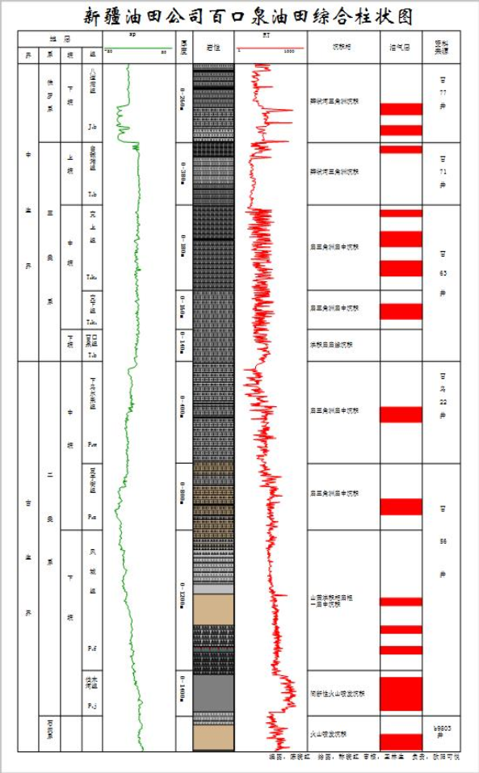

百口泉油田的地质储量是以油藏为单元，采用容积法计算的。自1958年发现到2005年底共探明9个区块18个油藏，涵盖了石炭系－侏罗系的稀油稠油各类油藏。共探明含油面积为90.7km2（叠合面积），探明石油地质储量16272×104t，可采储量4176.9×104t。其中稀油探明地质储量13124×104t，可采储量3443.9×104t，主要分布在百21井区三叠系储层；稠油探明地质储量3148×104t，可采储量733.0×104t，主要分布在百重7井区的三叠系、侏罗系储层。其中动用稀油石油地质储量9192×104t，可采储量2556.8×104t；稠油石油地质储量全部动用。
百口泉油田的地质储量是以油藏为单元，采用容积法计算的。自1958年发现到2005年底共探明9个区块18个油藏，涵盖了石炭系－侏罗系的稀油稠油各类油藏。共探明含油面积为90.7km2（叠合面积），探明石油地质储量16272×104t，可采
储量4176.9×104t。其中稀油探明地质储量13124×104t，可采储量3443.9×104t，主要分布在百21井区三叠系储层；稠油探明地质储量3148×104t，可采储量733.0×104t，主要分布在...

百口泉地区地层从基底石炭系开始，向上依次沉积了二叠系佳木河组、夏子街组和下乌尔禾组，三叠系百口泉组、克下组、克上组和白碱滩组，侏罗系八道湾组、三工河组、西山窑组、头屯河组和齐古组，浅层及地表为白垩系和第三系沉积。克－乌断裂下盘地层沉积较全，上盘二叠系及三叠系地层大部分缺失。克－乌断裂下盘沉积厚度达8000m，二叠系近5000m，三叠系900m，侏罗系1200m，白垩系以上900m，克－乌断裂上盘为超覆尖灭带构造，残余沉积厚度0～1000m。自下而上发育九套储集层，主力油层为三叠系克上组、克下组、百口泉组，克上组在整个油田普遍发育较好，克下组油藏、百口泉组油藏主要在百21井区块且发育较好。
百口泉地区地层从基底石炭系开始，向上依次沉积了二叠系佳木河组、夏子街组和下乌尔禾组，三叠系百口泉组、克下组、克上组和白碱滩组，侏罗系八道湾组、三工河组、西山窑组、头屯河组和齐古组，浅层及地表为白垩系和第三系沉积。克－乌断裂下盘地层沉积较全，上盘二叠系及三叠系地层大部分缺失。克－乌断裂下盘沉积厚度达8000m，二叠系近5000m，三叠系900m，侏罗系1200m，白垩系以上900m，克－乌断裂上...

百口泉油田主要由三种油藏类型组成
断裂遮挡的单斜油藏：上倾方向都为克—乌断裂切割遮挡，下倾方向有微弱的边水或岩性所封闭。百口泉组油水边界在-2180m，克下组在-1960m，克上组在-1940m左右。
地层超覆尖灭油藏：主要分布在克—乌断裂上盘三叠系超覆尖灭带，如422井区克上组、百31井区百口泉组等，油藏上倾方向油层超覆尖灭，下倾方向被断层切割封闭。
基底油藏：主要见于前缘断块二叠系，如检188断块佳木河组油藏、百1断块的下乌尔禾组油藏等。油藏处在三叠系覆盖之下的二叠系砂砾岩、火山岩的双重介质储集层中，两侧被断层切割。
断裂遮挡的单斜油藏：上倾方向都为克—乌断裂切割遮挡，下倾方向有微弱的边水或岩性所封闭。百口泉组油水边界在-2180m，克下组在-1960m，克上组在-1940m左右。
地层超覆尖灭油藏：主要分布在克—乌断裂上盘三叠系超覆尖灭带，如422井区克上组、百31井区百口泉组等，油藏上倾方向油层超覆尖灭，下倾方向...